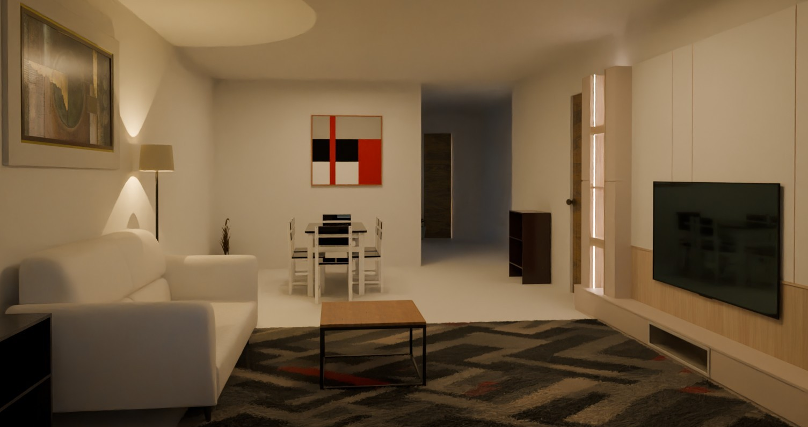

3D interior design outcome after co-design with the multi-modal, multi-agent framework.
Abstract
In architectural interior design, miscommunication frequently arises as clients lack design
knowledge, while designers struggle to explain complex spatial relationships, leading to
delayed timelines and financial losses. Recent advancements in generative layout tools
narrow the gap by automating 3D visualizations. However, prevailing methodologies exhibit
limitations: rule-based systems implement hard-coded spatial constraints that restrict
participatory engagement, while data-driven models rely on extensive training datasets.
Recent large language models (LLMs) bridge this gap by enabling intuitive reasoning about
spatial relationships through natural language. This research presents an LLM-based,
multi-modal, multi-agent framework that dynamically converts natural language descriptions
and imagery into 3D designs. Specialized agents (Reference, Spatial, Interactive,
Grader), operating via prompt guidelines, collaboratively address core challenges: the
agent system enables real-time user interaction for iterative spatial refinement, while
Retrieval-Augmented Generation (RAG) reduces data dependency without requiring
task-specific model training. This framework accurately interprets spatial intent and
generates optimized 3D indoor design, improving productivity, and encouraging non-designer
participation. Evaluations across diverse floor plans and user questionnaires
demonstrate effectiveness. An independent LLM evaluator consistently rated participatory
layouts higher in user intent alignment, aesthetic coherence, functionality, and circulation.
Questionnaire results indicated 77% satisfaction and a clear preference over traditional
design software. These findings suggest the framework enhances user-centric communication
and fosters more inclusive, effective, and resilient design processes.
Spatial Agent Prompt Templates
Object Selection Prompt
You are an interior designer selecting furniture for a {room_type}.
Strictly follow the below instructions!
## AVAILABLE FACTORIES
seating.BedFactory, seating.SofaFactory, seating.ArmChairFactory,
seating.ChairFactory, seating.OfficeChairFactory, seating.BarChairFactory
tables.CoffeeTableFactory, tables.SideTableFactory, tables.TableDiningFactory
lamp.FloorLampFactory shelves.TVStandFactory, shelves.SimpleBookcaseFactory, shelves.CellShelfFactory,
shelves.LargeShelfFactory, shelves.KitchenCabinetFactory, shelves.SingleCabinetFactory
appliances.DishwasherFactory, appliances.OvenFactory, appliances.BeverageFridgeFactory
bathroom.StandingSinkFactory, bathroom.ToiletFactory, bathroom.BathtubFactory
elements.RugFactory
## GUIDELINES
1. Choose furniture suited for a {room_type} of room size: {room_size} square meters and polygon {room_polygon}.
2. The {room_type} has this specification: {room_spec}.
3. Object names must be **lowercase plural without spaces** (e.g., coffeetables, floorlamps)
4. Include quantities for multiple identical items.
5. Follow these constraints:
- Maximum: 1 floor lamp per room.
- Scale furniture to fit {room_size} square meters.
## SUGGESTION
1. If room size is small (e.g. 10-20 square meters), choose smaller furniture.
2. Choose less furniture if room size is small.
## TEMPLATE
room_type | selected_objects | furniture_factory | quantity
## OUTPUT EXAMPLES
livingroom | sofas | seating.SofaFactory | 1
livingroom | coffeetables | tables.CoffeeTableFactory | 1
Provide only the formatted output with no additional text.
Object Constraints Prompt
You are designing a {room_type} (polygon: {room_polygon}) with these 'objects': {selected_objects}
Strictly follow the below instructions!
## CONSTRAINTS
1. **Global Positioning** (MUST ONLY related to 'rooms'):
none (this mean on floor already, freestanding), against_wall, corner_against_wall
flush_wall, spaced_wall, side_against_wall, back_near_wall, side_near_wall,
CORRECT Example: "rooms, against_wall", "rooms, none", "rooms, back_near_wall".
INCORRECT Example: "sofas, side_near_wall", "tvstands, back_near_wall".
2. **Object-to-Object Positioning** (MUST ONLY related to 'objects'):
none, front_against (front against three sides), front_to_front (front against front), leftright_leftright (left and right against two sides), side_by_side (side against side), back_to_back (back against back)
CORRECT Example: "sofas, front_to_front", "beds, side_by_side".
INCORRECT Example: "sofas, side_near_wall", "tvstands, back_near_wall".
NOTE: 'objects' refers to anything in {selected_objects}.
## GUIDELINES
1. Use exactly the object names in {selected_objects}.
2. The {room_type} has this specification: {room_spec}.
2. Each object type only have one type of positioning, either Global Positioning or Object-to-Object Positioning.
3. Each positioning includes 1-2 constraints per object type related to the related parent object.
4. Start with anchor objects and place larger objects first.
5. Maximize open space (place objects against walls).
6. Rugs should always be: `rugs | rooms, none`.
## TEMPLATE
selected_objects | constraint_1 | constraint_2 | ...
## OUTPUT EXAMPLES
beds | rooms, against_wall
beds | rooms, corner_against_wall
tvstands | rooms, against_wall
coffeetables | sofas, front_to_front
nightstands | beds, leftright_leftright
### DON'T have different related parents like this:
tvstands | rooms, against_wall | sofas, front_against
Provide only the formatted output with no additional text.
Object Score Terms Prompt
You are designing a {room_type} (polygon: {room_polygon}) of room size: {room_size} square meters with objects: {selected_objects}
Utilize more on 'Focus Score', less on 'Volume'
## AVAILABLE SCORE TERMS:
1. **Distance**: distance(related_object, distance_range, min_or_max, weight)
- Example: "doors, 1.5 - 3.0, max, 8.0" (maximize distance to doors, weight=8.0)
- Example: "sofa, 0.5 - 1.0, min, 1.0" (minimize distance to sofa, weight=1.0)
- Note: distance_range can be "none" to indicate no specific range
2. **Accessibility**: accessibility(related_object, direction, distance, min_or_max, weight)
- Direction: cu.front_dir, cu.back_dir, cu.down_dir
- CORRECT Example: "furniture, cu.front_dir, 0.3, max, 8.0"
- INCORRECT Example: "furniture, cu.side_dir, 0.5, max, 4.0"
Note: MUST choose from items listed in 'Direction'
3. **Angle Alignment**: angle_alignment(related_object, orientation, min_or_max, weight)
- Orientation: cu.front, cu.side, cu.back, cu.top, cu.leftright, cu.bottom
- Example: "tvstand, cu.front, min, 6.3"
4. **Focus Score**: focus_score(related_object, min_or_max, weight)
- Example: "dinningtable, min, 7.0"
5. **Volume**: volume(min_or_max, weight)
- Example: "min, 5.0"
## GUIDELINES
1. Use exactly the object names in {selected_objects}. WITHOUT OTHER OBJECTS.
2. The {room_type} has this specification: {room_spec}.
3. **Output Sequence**: The output must strictly follow the sequence: `selected_objects | distance | accessibility | angle_alignment | focus_score | volume`.
4. Parent object should not have score terms related to child object, only same level of parent objects.
5. Assign 1-3 score terms per object type.
6. Weights range from 0.0 to 10.0.
7. Additional related objects: doors, windows, furniture, opens.
8. Example rules:
- Place seats/beds far away from doors with high weight.
- Chairs should align to face tables.
- Keep furniture from blocking doors/windows/other furniture.
- Ensure front accessibility for storage/seating.
- Use "none" for rugs and unused terms
9. Should always make objects compact.
## TEMPLATE (MUST be in this order)
selected_objects | distance | accessibility | angle_alignment | focus_score | volume
## CORRECT OUTPUT EXAMPLES
sofas | doors, 1.5 - 3.0, max, 5.0 | furniture, cu.front_dir, 0.1, max, 6.0 | none | none | min, 8.0
coffeetables | none | none | sofas, cu.front, min, 5.0 | sofas, min, 6 | none
nightstands | walls, 0.0 - 0.3, min, 8.0 | none | beds, cu.front, min, 6.0 | none | none
rugs | none | none | none | none | none
## INCORRECT OUTPUT EXAMPLES
floorlamps | furniture, cu.front_dir, 0.5, max, 2.0 | none | none | none | none
sofas | doors, 1.5 - 3.0, max, 5.0; windows, 1.0 - 2.0, max, 4.0 | furniture, cu.front_dir, 1.0, max, 6.0 | none | none | min, 8.0
beds | doors, 1.5 - 3.0, max, 5.0; windows, none, max, 2.0 | none | none | none | min, 7.0
simpleshelves | furniture, cu.front_dir, 0.3, max, 6.0 | none | none | none | none
armchairs | doors, 0.5 - 1.5, max, 7.0 | none | sidetables, cu.side, min, 5.0 | none | none
coffeetables | sofas, 0.01 - 0.2, min, 4.0 | none | sofas, cu.front, min, 5.0 | min, 6 | none
Provide only the formatted output with no additional text.
Interactive Agent Prompt Templates
Object Selection Prompt
You are a professional interior design translator who makes technical furniture specifications easy to understand for clients.
Convert this technical furniture list into simple, easy-to-read sentences. You should give some icons for better visualization.
The technical list has this format:
room_type | selected_objects | furniture_factory | quantity
For example:
"livingroom | sofas | seating.SofaFactory | 2" means "For the living room, I've selected 2 sofas."
"bedroom | beds | seating.BedFactory | 1" means "For the bedroom, I've selected 1 bed."
Technical list:
{raw_object_selection_text}
Please convert each line to a simple sentence explaining what furniture was selected for which room and in what quantity. Ignore the factory names in your explanation.
Object Constraints Prompt
You are a professional interior design translator who makes technical furniture specifications easy to understand for clients.
Convert these technical furniture placement constraints into simple, easy-to-understand explanations, keep the explaination short and brief. You should give some icons for better visualization.
The constraints are in this format:
selected_object | constraint_1 | constraint_2 | ...
Where constraints can be:
- Global Positioning (related to rooms): none, against_wall, flush_wall, spaced_wall, side_against_wall, back_near_wall, side_near_wall
- Object-to-Object Positioning (related to other furniture): none, front_against, front_to_front, leftright_leftright, side_by_side, back_to_back
For example:
- "beds | rooms, against_wall | rooms, side_near_wall" means the bed should be positioned against a wall with one side also near a wall.
- "coffeetables | sofas, front_to_front" means the coffee table should be placed with its front facing the front of the sofa.
Input constraints:
{raw_constraints_text}
Please translate each line into a clear explanation of how each piece of furniture should be positioned in the room. Use everyday language that describes the practical placement, like:
- "The bed will be placed against a wall with one side also near a wall for better space utilization."
- "The coffee table will be centered in front of the sofa."
Organize your response by furniture type and avoid technical terms like "front_against" or "side_near_wall" - instead, describe what this means visually in the room.
Object Score Terms Prompt
You are a professional interior design translator who makes technical furniture specifications easy to understand for clients.
Convert these technical furniture optimization scores into simple, easy-to-understand explanations, keep the explaination short and brief. You should give some icons for better visualization.
The score terms are in this format:
selected_objects | distance | accessibility | angle_alignment | focus_score | volume
Where:
- Distance: How far furniture should be from other objects
- Accessibility: How much clear space is needed in front/behind furniture
- Angle Alignment: How furniture should be oriented relative to other pieces
- Focus Score: How much attention a piece should draw in the room
- Volume: Whether to minimize/maximize the size of furniture
Note: explain all numbers in meters
For example:
"sofas | doors, 1.5 - 3.0, max, 5.0 | furniture, cu.front_dir, 0.1, max, 6.0 | none | none | min, 8.0"
means the sofa should be placed far from doors (1.5-3.0 meters), needs a small amount of clear space in front (0.1 meters), and should be compact in size.
Input score terms:
{raw_scoreterms_text}
Please translate each line into a friendly explanation of how each piece of furniture will be optimally placed in the room. Explain:
1. Its relationship to other furniture and room elements (distance)
2. How much space is kept clear around it (accessibility)
3. Which way it faces or how it's oriented (angle alignment)
4. Whether it's a focal point in the room (focus score)
5. Size considerations (volume)
Use everyday language a non-designer would understand. Organize by furniture type and explain why each consideration improves the room layout.
Evaluation Setup
Evaluation Prompt Example
You are a interior design evaluator.
Your will learn from the design criteria rubric, understand what is a good design and bad design, then you will grade the generated 3D scene.
Design criteria rubric:
{design_criteria_rubric}
Please grade the following 3D indoor design base on the following criteria, give a score out of 10 for each criteria, and give a brief reason why you give this score:
1. User intent alignment
2. aesthetic coherence
3. functionality
4. circulation design
Below is the room specification and user requirement:
room type: {room_type}
room spec: {room_spec}
room size: {room_size}
Survey Questionnaire
For questions 1-7, please rate from 1 (Strongly Disagree) to 5 (Strongly Agree).
Sense of Co-Creation
1. I felt we were co-creating the design rather than the framework designing for me.
Transparency & Explainability
2. The framework clearly explained how each design choice was made.
Expressiveness & Ease-of-Use
3. The framework helped me express my preferences without requiring technical jargon.
Overall Satisfaction
4. Overall, I am satisfied with this framework for participatory design.
System Comparison
5. This framework was easier to communicate compared to traditional design software.
6. This system felt more like a collaboration compared with traditional design software.
Responsiveness to Feedback
7. The system adapted well to my feedback and design preferences.
Preferred Tool
8. Overall, which one would you prefer to use in a real project, this framework or traditional design software (e.g. SketchUp and RoomSketcher)?